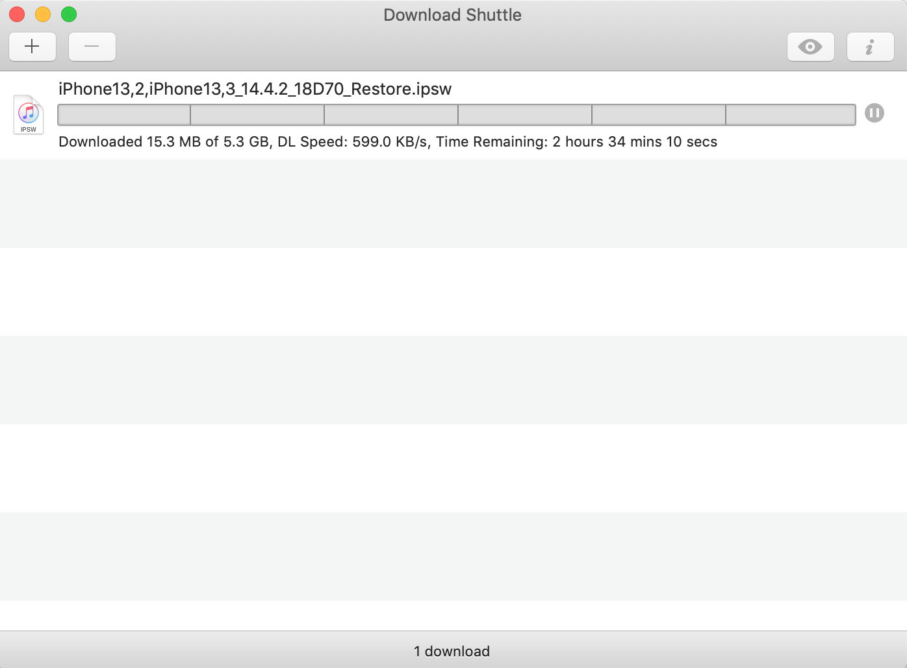

What is multi-threaded downloading?
You may have came here to see how to download files using multi-threaded
downloading technology to get faster downloading speeds, and not really
caring about the detailed explanation behind multi-threaded downloading,
but those who want to know whats really going on, here is a simple
explanation of what multi-threaded downloading really is and how does it
effect downloading speeds in a simple way.
Multi-threaded technology is used for getting faster downloading speeds
the technology functions as a segmentor for the downloading file, what
does that mean? It means that the downloaded file will get segmented in
to diferent parts of downloading, so it would be instead of download a
large file, it would be download in tiny parts, so for example if you
have a 1 GB file to download, using multi-threading downloading you can
segment the file into parts to download, in the multi-threaded download
manager, its refered to as the number of threads, so if we have for
example 4 threads, the file will be, segmented into 4 different, parts,
each the size of about 256 MB (1 GB = 1024 MB, 1024 / 4(threads) = 256
MB), resulting in a faster download speed.
How does all of this make my download faster?
We now know that multi-threaded downlaoding makes downloading a file
faster than normal downloading(single-threaded), but how is that, and
how does it work, all these questions will be answered right now.
The more threads used for downloading the file the more segments the
downloaded file will be downloaded in, and the more segments we have the
faster the downloading speed gets, this is all because of the bandwidth
increasing, what is bandwidth? Think of the internet connection as a
water pipe, the water pipe is the bandwidth, the larger the pipes
diameter is the more data can be transfered per second, also, think of
the water that its the internet speed, the data can be download or
upload quickly, but with a badly sized pipe it can get backed up in the
system.
The image below shows a representation of the bandwidth:
How much will my downloading speed improve?
Well don't expect your download speed to rocket up, the downloading
speed is mostly if not, fully based on your internet speed, so you can't
have a slow connection like 500KB/s and use multi-threaded doownloading
and expect your download speed to reach higher than that, multi-threaded
downloading is used when you have for example a connection with 16 MB/s
and when you download a file, you aren't getting full advantage of the
full download speed that you have, lets say you get about 10 MB/s, so by
using multi-threaded downloading so get a higher download speed, you
will get a faster download speed, the amount of speed increase will
differ, so the 10 MB/s may turn into 14MB/s, maybe higher or maybe less.
Personally i used multi-threaded downloading myself, and it has helped
me a lot, thats why im recomending it to you, I may not have the fastest
downloading speed on my internet connection but it did help, and this is
how, I have a downloading speed of 1 MB/s (i know it's so slow sadly),
and even worse than my slow connection, when i used to download a file,
i would get about 500 KB/s, that's really slow to work with, so i tried
multi-threaded downloading using a multi-threading download manager that
i will show you below, and my speed got up to its full potential, 1
MB/s, well i know it sounds really slow for many people, but in my
location this is what is offered, and this speed increase really helped,
and sped up downloading times.
Ok,so where do i find this multi-threaded download manager so i can get
started myself and get higher download speeds?
Below, i will be talking about the multi-threaded download manager i
used, its easy to use with a simple UI.
Download Shuttle

Download Shuttle is a download manager that uses multi-threaded downlaoding technology, its the one that i used and tested myself, and it gave me good results, here is the download link, its avalible on the macOS Appstore:
DownloadStep 1:
After you downlaoded the download shuttle app, open the app and you
should see this interface:
Step 2:
After you opened the app click on the plus button.
After clicking the plus button, you will get this interface:
This is the screen where you should setup your download, its very simple to start a download, first we need the URL of the download, follow these simple steps to get the download URL:
Step 3:
Now that you have the download link copied, past it in the text field
where it says Downlaod URL.
After you've done that you can you where it says
Total Segments, this is the amounts of segments you
want the downloaded file to be in, also known as the number of threads.
Max this out, the max is 6 threads, putting it to the max gives better
results.
Step 4:
After doing the steps click the Addbutton to start the multi-threaded download
After clicking start you will see this interface:

If you have the same content as the image that means the download has started using multi-threaded downlaoding, enjoy your fast downloading speed :)
Conclusion
these were all the steps needed to get make your download speed faster using multi-threaded downloading for macOS, if you have any questions or faced any problems you can email me your problem at: toolsx.app@gmail.com